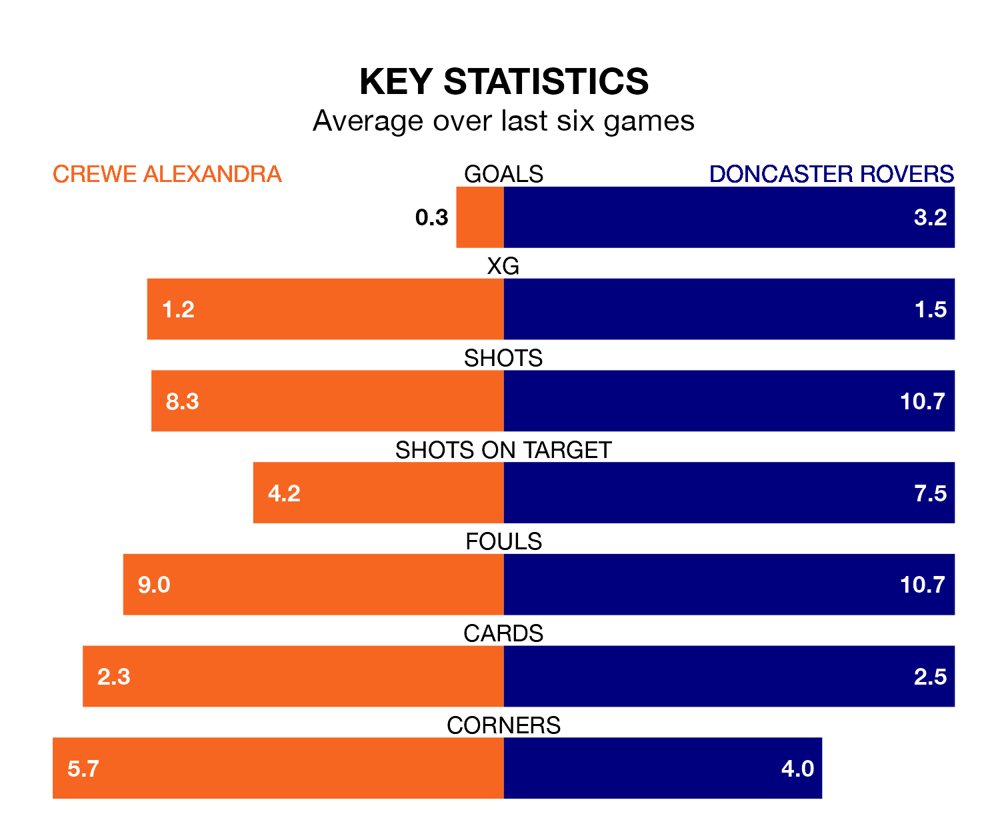

Doncaster Rovers come to the Mornflake Stadium to play Crewe Alexandra on late Monday in excellent form, having collected 16 points from their last six games.
The visitors have won five and drawn one of their last six fixtures, while the Railwaymen have a win and two draws.
With 73 goals in 46 games so far this season, Doncaster are scoring more than average in the league with 1.6 goals per game. And they are conceding at an average rate, letting in 68 goals at a rate of 1.5 per game.
Crewe, meanwhile, are average scorers, with 1.5 goals per game. They have conceded 1.4 goals per game.
In the last 10 years, Crewe and Doncaster have played each other on 15 occasions. Crewe won seven of them, Doncaster five, and they drew three times.
On average, the Railwaymen scored 1.5 goals and the Rovers 1.3 in those matches.
Their last meeting was on March 9, when Doncaster won 2-0 at home.
Rovers are fifth in the table after 46 games, of which they have won 21 and drawn eight, earning 71 points.
The Railwaymen are one place behind the Rovers in sixth, with 19 wins and 14 draws putting them on the same number of points.
In Joe Ironside, the visitors have one of the league's sharpest shooters so far this season. He has notched 20 goals in 45 appearances, to sit sixth in the scoring charts.
His goal rate of one every 183 minutes is slightly quicker than that of Elliot Nevitt, the home team's top scorer with a goal every 173 minutes, and a total of 16 goals in 43 games.
Crewe's last match was on April 27, a 1-1 draw against Colchester United, with Nevitt getting the goal for the Railwaymen.
Doncaster drew 2-2 with Gillingham last time out, also on April 27, with Ironside and Luke Molyneux on the scoresheet.
Updated: 10:44 (UTC), 30/04/24